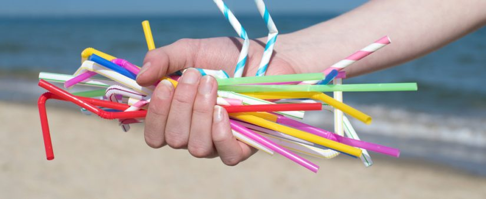

Begin with asking if they use plastic straws. Show pictures of plastic straws. Explain the four steps of the Life Cycle. The first 3 steps are set, however the 4 step varies. We are going to look at each step and environmental impacts. This is called a Life Cycle Assessment. Connect to this at the end "what can we do? reduce & recycle."
In this step, the raw materials that are needed to make straws are extracted from the Earth by drilling the ground. The raw materials that are extracted consist of an oil called petroleum and a natural gas called propane.
Environmental Impacts: This extraction of oil and natural gas is harmful to the environment. The drilling process causes pollution by contamination of nearby water sources and the release of toxins, fumes, and greenhouse gases.
In this step, the raw material are converted in the a synthetic material called polypropylene resin. This resin is then heated and mixed with colorants and other additives. The resulting mixture is then molded into straws. The straws are packaged and sent to stores to sell.
Environmental Impacts: This manufacturing process causes significantly harmful releases of chemicals such as pthalates and brominated flame retardants. The packaging requires more plastic and paper usage. The shipping and transportation to stores releases greenhouse gases.
In this step, people use the plastic straws when consuming different drinks. Consumers buy plastic straws to use at home and resturants serve consumers drinks with straws.
In this step, the plastic straws are disposed of after a single use. Some straws are recycled at plants that have the ability to recycle plastic straws. Unfortunatly, most recycling plants are unable to recycle plastic straws because straws are very small. As a result, most straws are sent to incineration plants or packed with waste that ends up being dumped into the ocean.
Environmental Impacts: The incineration process releases ash, dangerous chemicals, and harmful toxins into the air. Since plastic straws are non-biodegradable, those that are dumped into the ocean remain there for about 200 years. This poses a significant threat to marine life.
Connect to the begining "what can we do at the end? reduce & recycle." Efforts to recycle are great, unfortunatly, the issue with single use plastics straws is that, unlike other single use plastics, they are very hard to recycle. Most of them end up in trash dumps__. The best thing to do is avoid use all together when possible. Some good alternative inclue____.